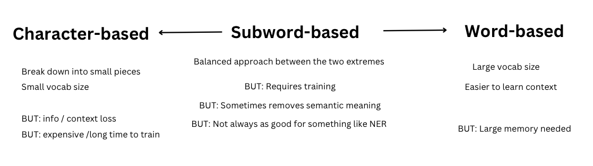

The What, Why, and How of Tokenisation in Machine Learning
The basics around the tokenisation process: why we do it, the spectrum of choices when you get to choose how to do it, and the family of algorithms most commonly used at the moment.
nlp
balochi-language-model
tokenisation
Author
Alex Strick van Linschoten
Published
June 1, 2023
For the types of machine learning that involve neural networks, the training process generally involves passing data and some weights into a function which we use to continually and iteratively optimise the weights. We hope that by showing lots of examples of the right way to do things (as per our data and annotations) we’ll emerge with a model (i.e. the updated weights) that performs the way we’d expect.
This whole process has various kinds of mathematics at its core, some basic calculations and some higher-order ideas to help figure out how to improve the weights. For all this, we need our data to be in a form that can pass through these calculations. We’re in the domain of natural / human languages at the moment, so we need somehow to turn our words into some kind of numerical form. Tokenisation is a big part of that process.
Most of what goes on with tokenisation is — to some extent — around finding a way to optimise the amount of data we have to feed into our model either during training or inference. We want to do both of these in the most efficient manner possible. Smaller amounts of data needed to train (or faster ways of processing the data) means you can do more with less.
🔡 Simple tokenization
If you think about a text string, a naive approach might be to just split it up by character.
sentence ="Some 10 million people speak the Balochi language, and most of them are located in Iran and Pakistan."print(list(sentence))
balochi_sentence =" اِدا کسے است کہ انگریزی ءَ گپ جت بہ کنت"# translates to "Is there someone here who speaks English?"balochi_chars =set(list(balochi_sentence.lower()))print(balochi_chars)
You can already see some wonkiness in how the sorted mapping is displayed. This derives from the fact that the Balochi script is written from right-to-left and this pattern is not well supported in a world dominated by English.
The mapping is what we want, and we can use this to map our original sentence into a sequence of numbers:
balochi_sentence_ids = [balochi_char_mapping[char] for char in balochi_chars]print(balochi_sentence_ids)
When it comes to language, the things we care at the tail end of all our modelling all relate to sequences of words and not characters. While our vocabulary (i.e. our list of unique characters) would be pretty small with character-level tokenization, we’d have some other issues:
loss of semantic meaning – our model would likely find it harder to ‘learn’ the higher level concepts without first finding a way past the idea of words and how they represent meaning in a way that pure characters don’t)
increased sequence length – if we think of a sentence as a sequence of words, a sequence of characters would be much longer in sheer numbers. This adds overhead in terms of the complexity of processing and training on the text.
At the other end of the spectrum we have word-based tokenisation:
balochi_words =set(balochi_sentence.split())print(balochi_words)word_mapping = {word: index for index, word inenumerate(sorted(balochi_words))}print(word_mapping)word_ids = [word_mapping[word] for word in balochi_words]print(word_ids)
This has the advantage of keeping our data at what feesl like an appropriate level of semantic abstraction, but you can probably imagine that our vocabulary size could well get out of control. If we have enough data, eventually our vocabulary size could grow to hundreds of thousands of items and then we’re going to have the same problem we had with long sequences in character-level tokenisation.
There are various ways of dealing with this. The blunt-force aproach would be to discard the words with a low frequency. We could pick some number (100,000 perhaps) and say that we’ll only include the 100,000 most common words from our corpus. Anything else will get replaced with something like “UNK” or “xxunk” that we’ll know isn’t a real word but just signifies that there was a low-frequency word there. This keeps our vocabulary (relatively) limited, but as you can imagine we might lose important information by discarding all those ‘uncommon’ words.
📚 Linguistically-enhanced tokenization
Before we get to the current best-in-class solution to this problem, it’s worth mentioning that there are some approaches that use some hand-crafted features derived from a linguistic understanding of a particular language.
For example, in deciding which words to leave out of tokenization, we might want to ignore ones which tend not to give so much useful information. For English, these are works like “the”, “or” or “a”. (You can get a sense of these words here.
We also might want to use ‘stemming’ and/or ‘lemmatisation’ as a way of reducing the total number of words in our vocabulary:
Stemming reduces the word to a more basic form, i.e. ‘the stem’. So the words “connection”, “connected” and “connects” might all reduce down to “connect”. Note that this stemmed word might not actually exist in English.
Lemmatisation is similar, but it uses a bit of extra knowledge of the language to reduce the words. For example, “good”, “better” and “best” might all reduce down to “good” even though they are spelled in quite different ways.
Both stemming and lemmatisation (as far as I know) and some other related techniques require a pre-existing knowledge base to exist and to have been hand-coded or hard-coded into the software you use to process your text. For some languages that’s not a problem, but for Balochi these resources haven’t yet been created. A few years back it might even have been the next step for me in my Balochi project to go ahead and work on preparing these kinds of linguistic features and work using these techniques. They require a considerable amount of expertise in the specific language you’re working on, and I’m assuming they take a long time to put together as well.
Luckily, there is a technique which allows us the best of many worlds: small(ish) vocabulary and no need for years constructing language-specific lists of words and their roots. Let the CPU handle all that!
👶 Subword tokenisation
Subword tokenisation is when you let the computer decide how to figure out the right balance between characters and words when it comes to splitting the text corpus up. The technique seems to have gained popularity for tokenisation in only the last decade, though the original algorithm on which some of it was based dates back to 1994.
The basic rule of thumb is this: split the words into the optimum number of pieces given a specific text corpus. So if we had two words, “car” and “cat”, in our corpus, the tokens we might generate from these would be: “ca##” “##r” and “##t”. The ‘##’ means that something can join to the letter from that side. Obviously in this small example, we didn’t really save any space, but for large volumes of data we’re going to generate down to just the right balance between characters and letters.
This technique was actually first proposed by Philip Gage as a compression algorithm in 1994, but then presumably rediscovered or reimplemented for tokenisation in a series of updates building on the original idea. There have thus been several implementations of this algorithmic family:
WordPiece (Schuster & Nakajima in 2012) – used in BERT and DistinBERT
(Thanks to Masato Hagiwara for a useful summary of the history and key developments on his blog here.)
This is my summary of some of the key differences to bear in mind:

The key difference between the tokenisation process we’ve seen and subword tokenisation is that now we need a text dataset and a ‘training’ process to ‘learn’ how to split words down into smaller chunks. I’ll get into the specific details of how this works along with some examples for Balochi in the next blog.
😜 Extra Meta-Tokens
There are a few extra tokens that get generated during some of the above tokenisation methods that it’s probably worth talking about now. These tokens are added to the vocabulary of tokens and they represent various contextual information. For example:
Token
Purpose / Meaning
CLS
‘classification’. Token prepended to the start of each text chunk.
SEP
‘separate’. Token used to separate sentences inside a text chunk.
##
(mentioned above). Used to denote other tokens can be attached here.
BOS
‘beginning of stream’. Also used to denote the beginning of a sentence.
PAD
‘pad’. A way to make arrays of tokens the same length / size.
MASK
‘mask’. Used to mask a word in a sentence and used in training.
xxmaj
indicates that the next word begins with a capital letter.
UNK
‘unknown’. Used when you need to limit your vocabulary size.
Note that these aren’t universally used. The xx prefix is something that FastAI uses in its tokenisation to avoid the chance that something like ‘PAD’ is being used as an actual word in the text.
🔢 Numericalising the tokens
Once we have our list of tokens and their ids (see above), it isn’t enough for us just to pass that in for training our models. Neural networks will attach to anything that gives a bit of signal when they are learning from data. If we have a list of tokens and ‘dog’ is assigned the number 3 and ‘cat’ is assigned the number 10, our model might assign some kind of ranking or importance to those numbers. So we have to pass our values in a way that doesn’t lead to this kind of unanticipated signal. The way we do this for language is to ‘one-hot encode’ the values.
So instead of:
balochi_sentence_ids = [word_mapping[word] for word in balochi_sentence.split()]print(balochi_sentence_ids)
[3, 6, 1, 8, 2, 0, 9, 5, 4, 7]
…we can generate an array of arrays. For each word in the sentence, we have a subarray that has a length of our vocabulary and then we turn the value in the word’s index to 1 if that’s the word at this point in our sentence. It’ll be easier to see in an example :)
import torchimport torch.nn.functional as Finput_ids = torch.tensor(balochi_sentence_ids)one_hot_encodings = F.one_hot(input_ids, num_classes=len(balochi_words))print(one_hot_encodings)
So you can see for the first word (i.e. the first subarray) we have a 1 at index 3 and this corresponds exactly to our sentence and the mapping of words. (I hope it’s clear now also why we might want to have some kind of limitation of just how large our vocabulary gets.)
In my next post I’ll walk through all of the details showing how you train your own subword tokenizer, compare how it works in two popular Python libraries (Spacy and 🤗 Tokenisers and in general show how all of this fits together in the bigger picture.